CHAPTER 1
MECHANICS
1.1 Introduction
Mechanics is the branch of physics that deals with the study of the motion of bodies subjected to forces. Mechanics is divided into statics, which deals with sets of forces in equilibrium and kinematics, which deals with dynamic forces acting on objects.
1.2 A force
A force is defined as pull or push in on a body, it is a vector quantity it is measured in Newton. A Newton is the force that gives a mass of 1 kg an acceleration of $1 \mathrm{~m} / \mathrm{s} 2$
1.3 Types of forces
There are two main load types of forces that are most common when determining deflection of a support brace i.e
- Point Load (PL)
- Uniform Distributed Load (UDL).
- Uniformly varying load
The examples following will be based on supports with one fixed end (cantilever beams).
a) Point Load (concentrated load)
A point load is a force that is applied to a concentrated point on the support. An example would be a person standing at the free end of a diving board. Concentrated loads are more likely to cause bending. Below are images of a real life experiment of both load types mentioned as well as load placement, showing how those factors affect deflection
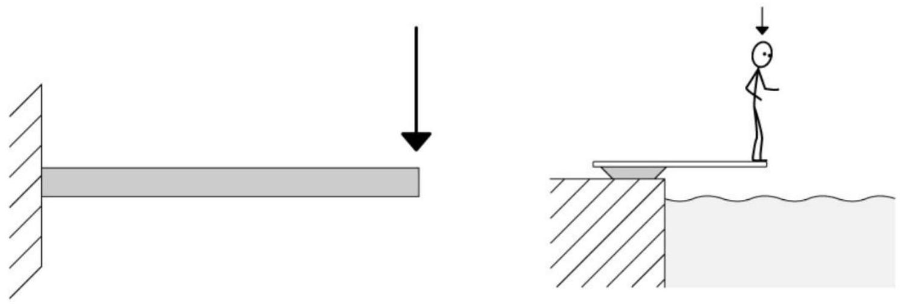b) Uniformly distributed load
A uniform distributed load is a force that is applied evenly over the distance of a support. For the least amount of deflection possible, this load is distributed over the entire length of the support. An example would be a shipping crate on a forklift. In construction, UDLs are preferable over point loads. Under an evenly distributed load the possibility of a support bending and/or failing are significantly reduced when compared to a point load situation..
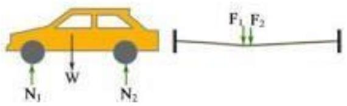For example, the ground reaction forces on the tires of a car can be considered as concentrated loads to forces (Fig. 3.32). Another example is the load of a person walking on a tightrope.
A uniform distributed load is a force that is applied evenly over the distance of a support. For the least amount of deflection possible, this load is distributed over the entire length of the support. An example would be a shipping crate on a forklift. In construction, UDLs are preferable over point loads.
c) uniformly varying load.
A uniformly varying load is also called the triangular load which starts with zero intensity at one end of the beam and varies linearly to the other end of the beam. This variation of load comes under the nonuniform distribution of loads over the beam. In such conditions, the reaction on each support will be different, having lower values at the end that consist of zero intensity of loading.
1.4 Resolution of forces
A force is a vector quantity which can be expressed in x and y on rectangular coordinates.
Consider a force F pulling a load along a surface at an angle $\theta$.
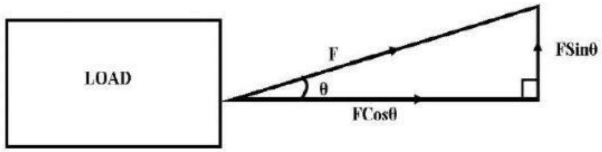The horizontal component of the force is $\mathrm{F} \operatorname{Cos} \theta$ while the vertical component is F Sin $\theta$. Also consider a load sliding along an inclined plane at a constant acceleration
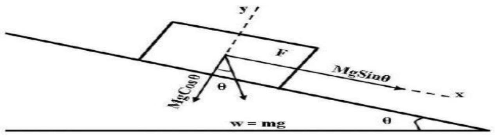Example
The horizontal component of the force is $\mathrm{F} \operatorname{Cos} \theta$ while the vertical component is F Sin $\theta$. Also consider a load sliding along an inclined plane at a constant acceleration. Find the tension in each cord if the weight of suspended object is 490 N .
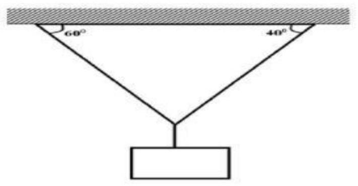Solution
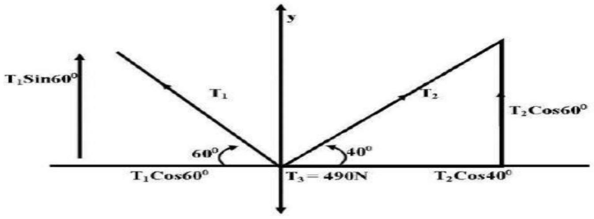$\sum F_{y}=0$
$T_{3}-490=0$
$\sum F_{x}=0$
$T_{2} \operatorname{Cos} 40^{\circ}-T_{1} \operatorname{Cos} 60^{\circ}=0$
$T_{2}=0.653 T_{1}$
$\sum F_{y}=0, T_{2} \sin 40^{\circ}+T_{1} \sin 60^{\circ}-490 N=0$
$0.653 T_{1} \sin 40^{\circ}+T_{1} \sin 60^{\circ}=490 \mathrm{~N}$
$T_{1}=381 N$
$T_{2}=0.653(381 N)$
$T_{2}=249 N$
Friction force
Friction force is a force that opposes relative motion between two surfaces.
For a body resting on a rough surface, when external force ( $F$ ) is applied on it that force has to overcome friction (Fr) before the body moves. The body is moved by a net force (F net) i.e.
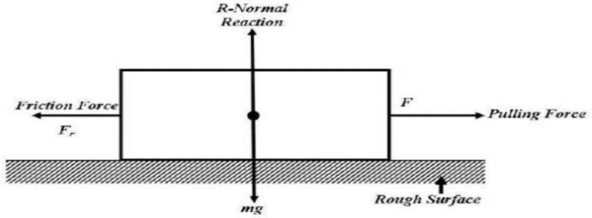Frictional force Fr depends on the normal reaction ( $\mathrm{R}=\mathrm{mg}$ )
$F \propto R$
$\mathrm{F}_{\mathrm{r}}=\mu R$
Where $\mu$ is the coefficient of friction, $\mu$ depends on the nature of two surfaces that are in relative motion.
Examples
A block of wood of mass 20 kg requires a horizontal force of 50 N to pull it with a uniform velocity along a horizontal surface. Calculate the coefficient of friction between the block and the surface.
Solution
Example 2
A mass of 5 kg is placed on a plane inclined at an angle of 300 to the horizontal. Calculate the force required to pull the mass up the plane at uniform velocity if $\mu=0.5$
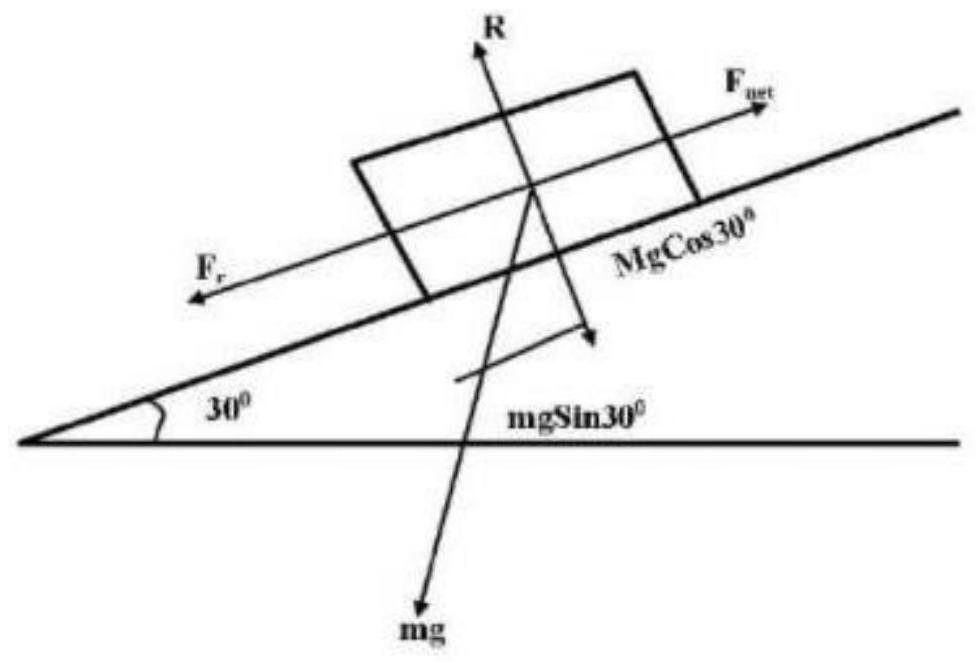$F_{r}=\mu R=\mu m g \operatorname{Cos} \theta=0.5 \times 50 \operatorname{Cos} 30^{\circ}=21.65 \mathrm{~N}$
There are two forces opposing motion, Fr and mgSin $\theta$
$\mathrm{F}_{\mathrm{net}}=\mathrm{F}-\left(\mathrm{F}_{\mathrm{r}}+\mathrm{mg} \operatorname{Sin} \theta\right)$
We have uniform motions, net force is zero
$F=F_{r}+m g \operatorname{Sin} \theta$
$F=21.65+50 \operatorname{Sin} 30^{\circ}=46.65 \mathrm{~N}$
Factors affecting friction
- Nature of the surface.
- Applied force is directly proportional to the normal reaction, R.
- Resistance
1.5 Moment of force
The Moment of a force is a measure of its tendency to cause a body to rotate about a specific point or axis.
1.5.1 Clockwise and anti-clockwise moments
If the moment of a force turns or rotates the body in clockwise direction, then it is called as clock- wise moment. Whereas if the moment of a force turns or rotates the body in anti-clockwise direction, then it is called anti-clockwise moment
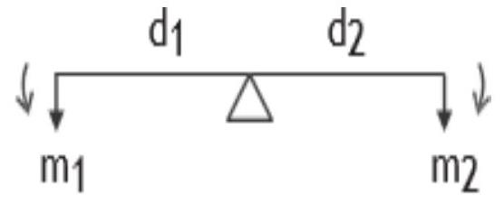Clockwise moment $=\mathrm{m}_{2} \times \mathrm{d}_{2}$
Anti-clockwise moment $=\mathrm{m}_{1} \times \mathrm{d}_{1}$
According to the principle of moments,
Sum of anti-clockwise moments = sum of clockwise moments
From figure,
Example
Study the diagram below and determine the value of X and hence the length of the bar.
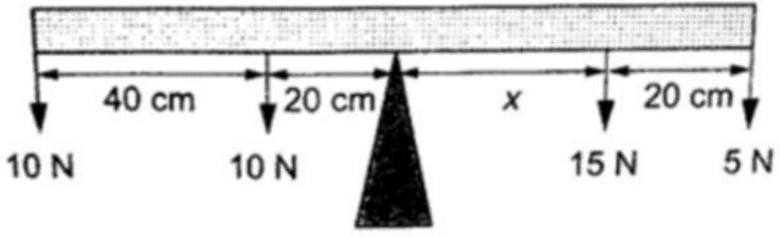Clockwise moments $=15 X N+5(X+20) N$
Anti-Clockwise moments $=20 X 10+(60 X 10)$
$=800 \mathrm{~N} \mathrm{~cm}$
Clockwise moments =Anti-Clockwise moments
$800 N=20 X+(100)$
$X=35 \mathrm{~cm}(0.35 \mathrm{~m})$
Example 2
A uniform rod 1.0 m long weighs 5 N . It is supported horizontally at one end by a spring and the other end rests on a table as shown below. A mass of 2 kg is hung from the rod as shown; determine, (10 marks)
a) Reading of the spring balance
b) Reaction force, F, from the table.
Solution
a)
The 2 kg mass and the weight of the rod ( 5 N ) gives clockwise moment while the spring balance provides anticlockwise moments.
Clockwise moments $=(2 \times 10) \times 0.4+(5 \times 0.5)=10.5 \mathrm{Nm}$.
Anticlockwise moments $=\mathrm{S} \times 1$ (reading of the spring balance),
$1 \mathrm{~S}=10.5$, hence $\mathrm{S}=10.5 \mathrm{~N}$.
b)
Upward forces = downward forces
Downward forces $=(2 \times 10)+5=25 \mathrm{~N}$
Therefore F+ $10.5=25$, hence F $=14.5 \mathrm{~N}$.
1.6 circular motion
This is the study of motions of bodies moving in a circular path.
When the motion of the body in the circular path is with uniform velocity it is called uniform circular motion. When it is in uniform velocity, the direction of motion at any point is along the tangent to the circle at that point. If the body is set free, it would move in the direction of the tangent at that point.
1.6.1 Angular velocity
Consider a body (or particle) moving along a circular path. If $\theta$ is the angle turned by the radius vector in $t$ second, then
$\omega=\frac{\theta}{t}$
The angle covered or swept or turned by the radius vector in one second is known as angular velocity. SI Unit of angular velocity is radian / second (rad s-1). Radian is the angle made at the centre of the circle by an arc whose length is equal to the radius of the circle.
1.6.2 Relation between angular velocity and linear velocity
Consider a particle moving along a circular path of radius r . Initially the particle is at a point A. After t second the particle reaches the point B. Let $\theta$ be the angle swept by the radius vector in t -second.
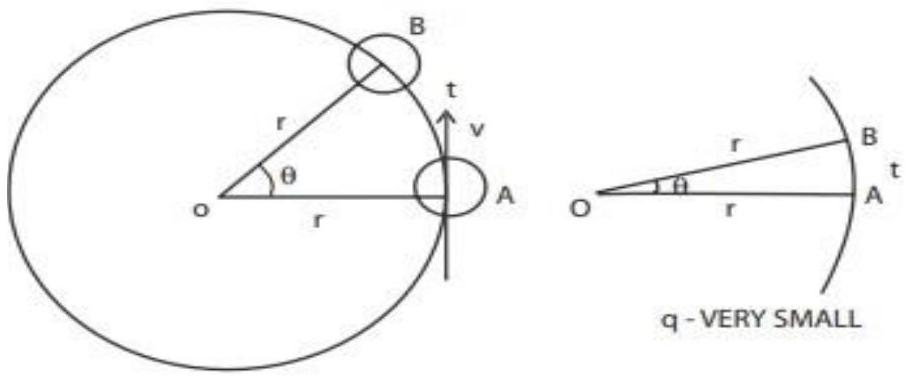Angular velocity
$\omega=\frac{\theta}{t}$
If $\theta$ is very small, the distance AB will be considered as a straight line. Let v be the linear velocity of the particle.
Linear velocity, $\mathrm{v}=\frac{\mathrm{s}}{\mathrm{t}}$, In $\triangle \mathrm{OAB}, \sin \theta=\frac{s}{r}$
If $\theta$ is very small, $\sin \theta=\theta$ in radian
$\therefore \theta=\frac{\mathrm{s}}{\mathrm{r}}$ (or) $\mathrm{s}=\mathrm{r} w$
Linear velocity, $v=\frac{r \theta}{r}=r \omega$
$\mathrm{v}=\frac{\mathrm{r} \theta}{\mathrm{r}}=\mathrm{r} \omega$
$\therefore \mathrm{v}=\mathrm{r} \omega$
Relation between period T and angular velocity w
Angle turned by the radius vector in T second $=2 \pi$
$\therefore$ Angle turned by the radius vector in one second $=\frac{2 \pi}{T}$
i.e., Angular velocity, $\omega=\frac{2 \pi}{\mathrm{~T}}$ or $\mathrm{T}=\frac{2 \pi}{\omega}$
Centripetal force and Centrifugal force
Centripetal force is defined as the force which acts towards the Centre along the radius of the circular path on which the particle is moving with uniform velocity.
Example is a stone tied to one end of a string and whirled in a horizontal plane with constant speed. The stone is subjected to a force directed towards the Centre of the circle.
Examples for centripetal force
A body tied to one end of a string is being rotated in a circle; the centripetal force is supplied by the tension of the string.
The moon revolving around the earth, the centripetal force is the gravitational pull of the earth on the moon.
A person riding a cycle along a circular path, the necessary centripetal force is supplied by a sidewise pressure exerted by the road on the tires.
3.4.1 Centrifugal force on the other hand is defined as the force acting along the radius of the circle, away from the centre, to balance the centripetal force.
A stone tied to one end of a string is being rotated in a circle, the stone itself exerts an equal and opposite force on the hand. It is due to the centrifugal force.
A centrifugal pump is used to pump well water on the basis of centrifugal force.
Expressions for Normal acceleration and Centripetal force
$\therefore$ Normal acceleration, $\mathrm{a}=\frac{\mathrm{v} \theta}{\mathrm{t}}$
Normal acceleration, $\mathrm{a}=\frac{\mathrm{v}^{2}}{\mathrm{r}}$ or $\mathrm{a}=\mathrm{r} \omega^{2}$
3.4.2 Centripetal force
$\mathrm{a}=\frac{\mathrm{v}}{\mathrm{r}}$
Centripetal force, $F=\frac{m v^{2}}{r}$ or $F=m r \omega^{2}$
EXAMPLE
One end of a string of length 0.64 m is attached to a bucket containing water and the bucket is rotated about the other end in a vertical circle. Find the minimum speed with which it can be rotated without spilling the water at the highest point. How many revolutions per minute it is making?
Banking of curved paths
Curved track is to be considered as a part of the circular path. Consider a motor car moving along a curved road. Now two forces are acting on the car, one is the weight of the car acting downward and second is the normal reaction acting upward. In addition to these two forces, a horizontal centripetal force should act on the car for safe negotiation of curved motion. This force is supplied by the pressure exerted by the road on the tyres of the car towards inner side. According to Newton's third law of motion, the tyres exert an equal and opposite pressure on the road towards the outer side. Hence there must be a frictional force between the road and the tyres.
Angle of Banking
It is the angle between the normal horizontal path and the curved banked path. The angle of banking of a curved path is defined as the angle through which the outer edge of the road is raised over the inner edge. The angle of banking of curved railway tracks is defined as the angle through which the outer rail is raised over the inner rail.
SOLVED PROBLEMS.
A cyclist is riding at a speed of $22 \mathrm{~ms}-1$ takes a turn on a curved circular road of radius 44 m . What is his inclination to the vertical?
Given
An electric train has to travel on a railway track with a curve of radius 120 m with a speed of 36 kmph . Calculate the angle of banking of the rails.
Given
$\mathrm{v}=36 \mathrm{kmph}=36 \times \frac{1000}{3600}=10 \mathrm{~ms}^{-1}$
$r=120, g=98 m s^{-1}$
A bend in level road has a radius of 18 m . Find the maximum speed with which a car negotiates the bend without skidding. The elevation of the road is $7^{\circ}$.